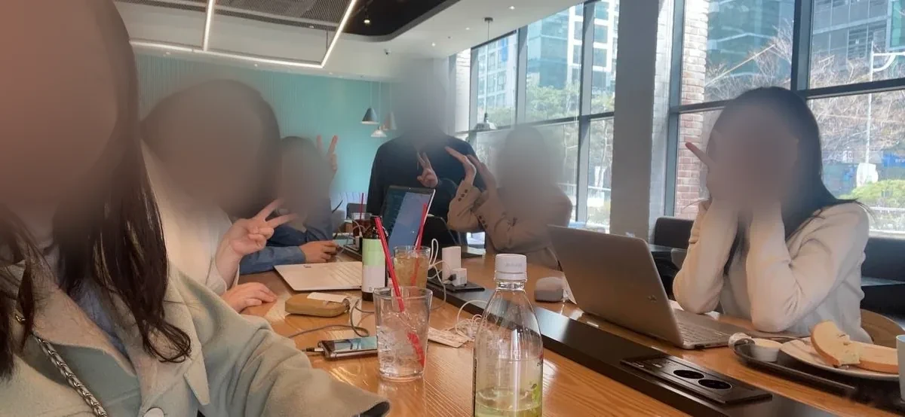
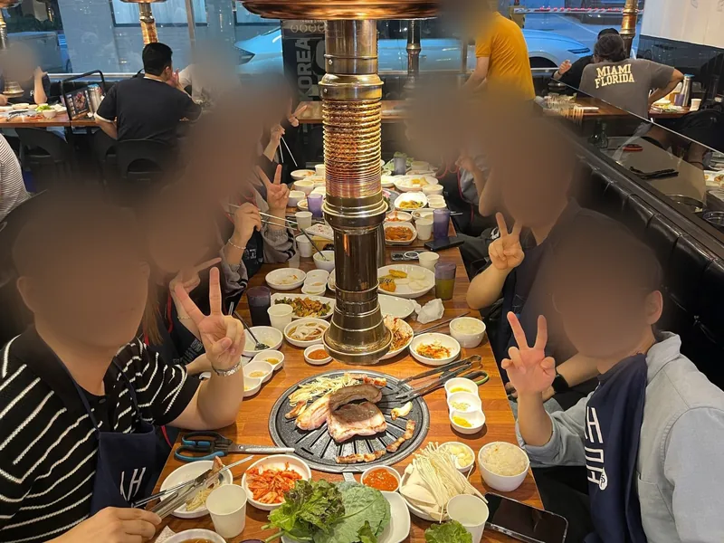
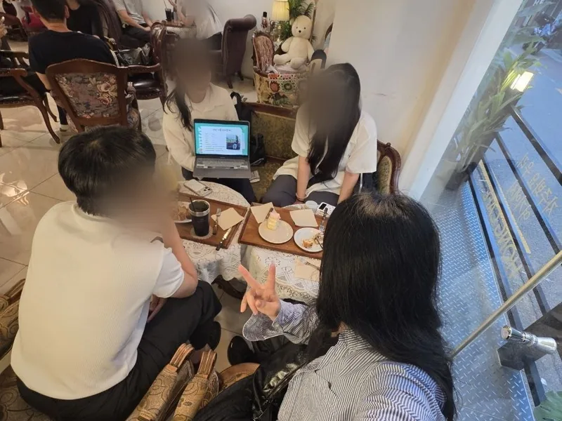

PATH A / 대학생 파트6명
과제와 시험의 미로
- 내 수업으로 AI 과외 받기
- 시험 요약 노트·예상 문제 만들기
- 리포트와 팀플 자료 준비
- 나만의 공부 툴 만들기
AI 스터디 아리아드네 2기
과제·시험·자소서·AI 면접,
6주 동안 AI로 같이 길 찾아요
전공 무관 · 코딩 몰라도 OK
신화 속 아리아드네는 미궁 앞에 선 테세우스에게 실타래를 건네 길을 찾게 해줬어요. 지금 우리의 미로는 과제·시험·자소서·면접, 그리고 실타래는 AI예요. 아리아드네는 그 실을 제대로 쥐는 법을 같이 배우는 곳이에요.
START WHERE YOU ARE
01“다들 AI 쓰는데
나만 대충 쓰는 것 같다”
02“과제나 자소서에 AI 써도
되는 건지 모르겠다”
03“AI 면접 본다는데
뭘 준비해야 할지 모르겠다”
같은 고민을 가진 사람끼리 파트를 나눠 진행해요 ↓
02 / TWO PATHS
각자의 고민에서 시작해
직접 써보며 배워요.
03 / EVERY WEEK
배우기만 하는 게 아니라,
같은 고민을 가진 사람들과 매주 이야기를 나눠요.
주 1회 평일 저녁 · 회당 90분 세부 시간 배분은 추후 안내
1기 후기 · VOICES
1기 참가자가 직접 쓴 후기예요. 이름은 밝히지 않고 파트만 표기했어요.
04 / WHAT REMAINS
매주 노션에 쓴 활동일지가 그대로 포트폴리오가 돼요. ‘AI 써봤어요’가 아니라 ‘AI로 이걸 해냈어요’를 링크 하나로 보여줄 수 있어요.
실제 활동 기록 보기 ↗활동 기록 링크 준비 중
05 / BY YOUR SIDE
운영진 4명이 파트별로 2명씩 함께해요.
한 명씩 제대로 봐드리려고
파트별 6명만 받아요.
FIELD NOTES
아리아드네 이전에 운영된 스터디와 모임 현장이에요.







아리아드네 1기 이전에 운영된 모임 사진이에요. 참여자 얼굴은 블러 처리했어요.
YOUR NEXT CHAPTER
AI가 궁금한 20대 대학생·취업 준비생이라면.
전공 무관, 코딩 몰라도 OK.